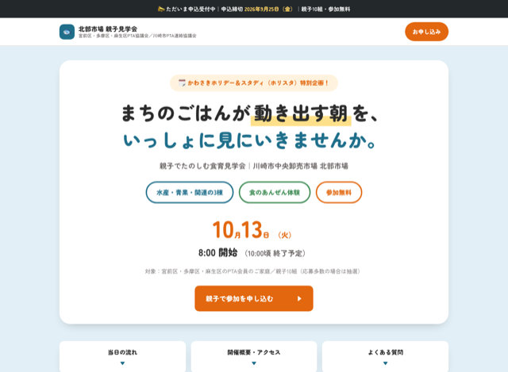
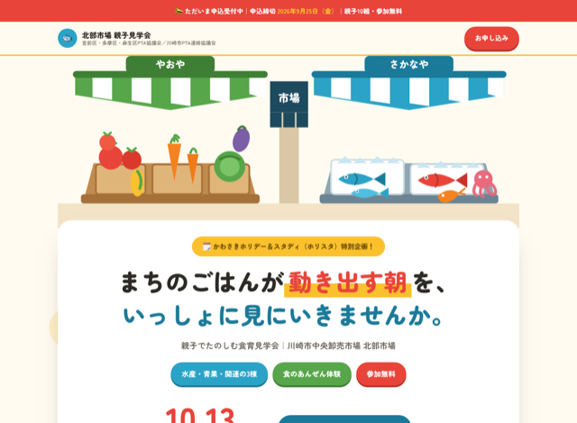
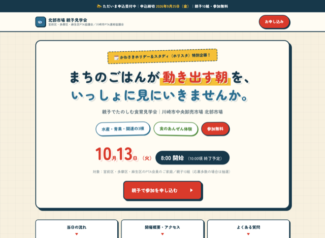
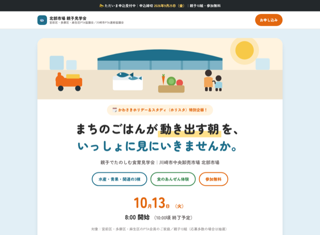
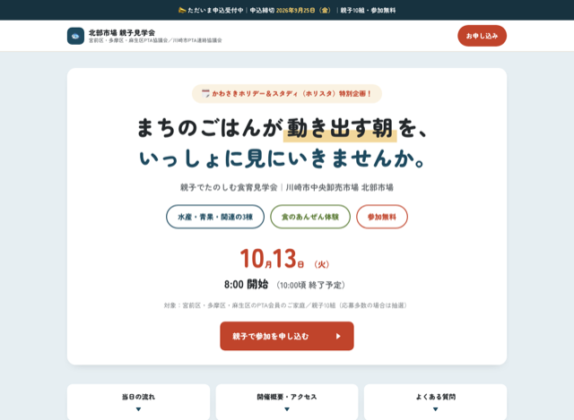
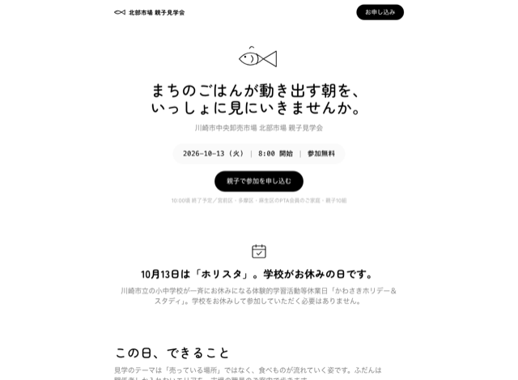
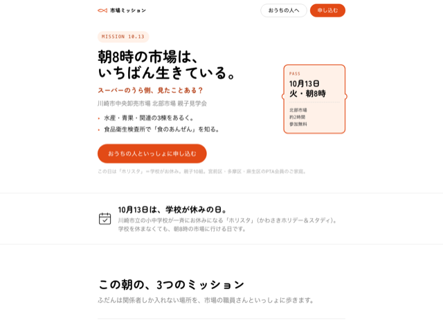

北部市場 親子見学会（2026年10月13日）／掲載内容はどの案も同じです。見た目だけが違います。画像はページ上部のみ。クリックすると実物が開きます。

パステルの面でセクションを区切る型。情報がどこにあるか一目で分かる。役員会で評価された案。

店先のイラストを描き起こした、いちばん賑やかな案。野菜と魚から色を取り、押すと沈むボタン。

方眼のクラフト紙に、太枠＋ずらし影のステッカー。のぼり旗の見出しと紅白ストライプ。

v3の構造に、市場の風景イラストを添えた案。落ち着いたトーンのままイラストで温度を足す。

v3の色を藍・朱・山吹に振った案。見出しは短冊型。落ち着くが、v3との差は小さい。

純白1枚・影なし・黒のボタンだけ。関係者への案内文書としては品が良いが、募集向きではない。

子ども自身が読む前提の別ページ。保護者向けとは書き方が違う。